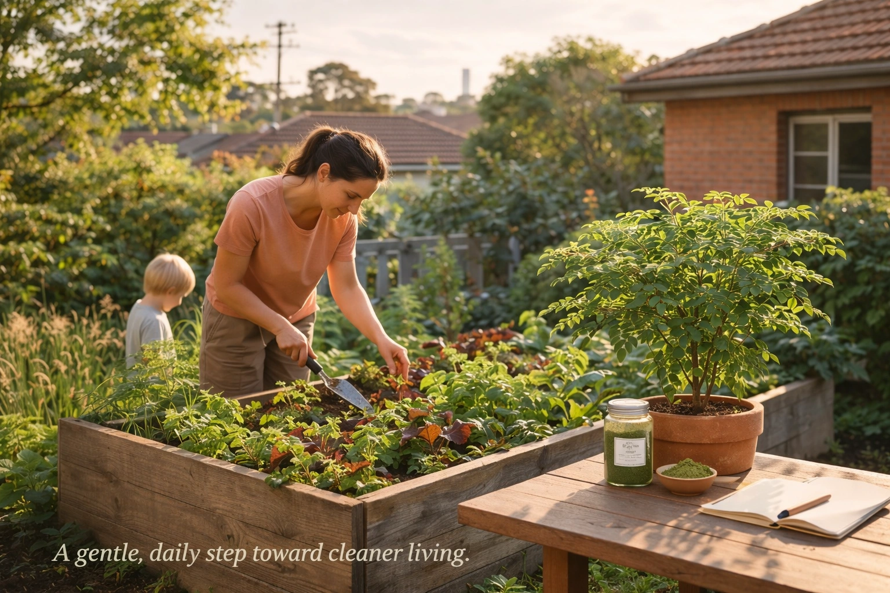

The Australian Heavy Metal Problem: We are exposed to invisible toxins every day—in our water, our food, and the air. For Australians, this is particularly relevant: VegeSafe research from Macquarie University shows that more than one-third of tested residential gardens exceed safe lead levels, with inner-city areas showing concentrations up to 960 mg/kg. You don't need a harsh juice cleanse to fight back. One of Moringa's most fascinating properties is its ability to bind to heavy metals (like arsenic, lead, and mercury) in the body and help flush them out through natural elimination processes. It's a gentle, daily detox that works with your body's own cleansing systems—perfect for Australians concerned about urban soil contamination and environmental toxin exposure. read our guide on joint health
For context on evidence and realistic expectations, see what science (and users) say about moringa in 2026 and how lab-tested leaf powder differs from typical retail lots.

Worried about lead in Aussie garden soil? Start your gentle daily detox with Australian-tested Moringa. Shop Moringa in Australia → read our curry leaves guide guide
Short on time? See the Moringa powder used in this guide: View product & pricing → learn more about best moringa
Delivered anywhere in Australia. Vegan • Gluten-Free • No Additives.
🔗 Explore More from Our Moringa Hub
Discover related articles and guides:
- Moringa Benefits Guide
- How to Use Moringa
Understanding Heavy Metal Exposure in Australia
Heavy metals like arsenic, mercury, lead, and cadmium can accumulate in our bodies over time through various sources. For Australians, the risks are real: contaminated urban soil (as documented by VegeSafe), certain foods (especially fish from contaminated waters), air pollution in major cities, and even some cosmetics. The VegeSafe program at Macquarie University has revealed that more than one-third of tested Australian residential gardens have soil lead levels exceeding the 300 mg/kg safety guideline, with inner-city areas like Sydney, Leichhardt, and Marrickville showing the highest concentrations. While our bodies have natural detoxification systems, chronic exposure can overwhelm these systems, leading to health issues—particularly for children, who are more vulnerable to lead's effects on brain development.
Common Sources of Heavy Metals in Australian Daily Life
Beyond garden soil, Australians encounter heavy metals through several everyday channels. Drinking water can contain trace amounts of lead from older plumbing, especially in pre-1970s homes. Seafood—particularly larger predatory fish like swordfish, shark, and some tuna—can accumulate mercury; Food Standards Australia New Zealand (FSANZ) advises pregnant women and young children to limit these. Rice and rice products may contain arsenic, especially brown rice, due to how the plant absorbs it from soil. Cosmetics such as some lipsticks, kohl, and traditional remedies have been found to contain lead. Industrial and traffic pollution in cities like Melbourne and Sydney contributes to airborne lead and cadmium. Understanding these sources helps you reduce exposure while Moringa supports your body's natural elimination of what you cannot avoid.
🌿 Try Premium Moringa Powder Today
Experience the benefits of 100% organic, lab-tested moringa powder from NutriThrive. Free delivery across Victoria! learn more about add moringa
How Moringa Helps with Heavy Metal Detox
Research has shown that Moringa contains compounds that can bind to heavy metals, helping to remove them from the body. The key mechanisms include:
1. Chelation Properties
Moringa contains natural chelating agents—compounds that can bind to heavy metals and help transport them out of the body through normal elimination processes. This is particularly effective for metals like arsenic, which can be difficult to remove once accumulated.
2. Antioxidant Support
Heavy metals can cause oxidative stress in the body. Moringa's rich antioxidant profile helps protect cells from this damage while supporting the body's natural detoxification pathways.
3. Liver Support
The liver is your body's primary detoxification organ. Moringa contains compounds that support liver function, helping it process and eliminate toxins more effectively.
Heavy-metal tested batches, compliant with FSANZ food standards for Australia.
Scientific Evidence
Studies have demonstrated Moringa's ability to reduce heavy metal accumulation in the body. Research has shown particular effectiveness against arsenic, with studies indicating that Moringa supplementation can help reduce arsenic levels in tissues and blood.
Key Compounds in Moringa That Support Detox
Moringa's detox-supporting effects come from a combination of bioactive compounds. Polyphenols and flavonoids—including quercetin, kaempferol, and chlorogenic acid—act as antioxidants and may help bind metals. Glucosinolates and their breakdown products support phase II liver detoxification enzymes. Chlorophyll, which gives Moringa its green colour, has been studied for its potential to bind certain toxins. The leaf powder also provides fibre, which supports healthy elimination and gut motility—important for excreting bound metals. Together, these compounds work synergistically rather than in isolation, which is why whole-leaf Moringa powder is often preferred over isolated extracts for gentle, daily heavy metal support.
How to Use Moringa for Daily Detox
Unlike harsh detox programs that can leave you feeling weak and depleted, Moringa provides gentle, daily support. Simply add 1-2 teaspoons of Moringa powder to your daily routine—in smoothies, juices, or even water. The detoxification happens gradually and naturally, supporting your body's own cleansing processes.
Make it a habit with our subscription-friendly 100% pure Moringa powder.
Formulated and shipped from Melbourne for Australian conditions.
See price & delivery options in Australia →Important Considerations
While Moringa can support natural detoxification, it's important to remember that the best approach to reducing heavy metal exposure is prevention. Be mindful of your water source, choose 100% natural foods when possible, and be aware of potential sources of contamination in your environment.
Why Daily Detox Matters
Rather than waiting for toxins to accumulate and then doing a harsh cleanse, a gentle daily approach with Moringa helps your body continuously process and eliminate toxins. This is more sustainable and less stressful on your system than periodic intensive detoxes.
Pairing Moringa with Other Detox-Friendly Habits
For best results, combine daily Moringa with simple lifestyle habits that support your body's natural cleansing. Hydration—aim for 2–2.5 litres of water daily—helps flush toxins via the kidneys and supports bowel regularity. Fibre-rich foods (vegetables, legumes, wholegrains) promote healthy gut motility and bind some metals in the digestive tract. Quality sleep allows your brain's glymphatic system to clear metabolic waste overnight. Reducing alcohol eases the load on your liver. Australians living in high-exposure areas (urban gardens, older housing) may benefit most from this combined approach: minimise new exposure where possible, and support elimination with Moringa and these habits.
FAQ Section
Q: How long does a heavy metal detox take?
A: Natural detoxification is a gradual process. While some users report lifting of brain fog within 3-5 days, deep tissue chelation of metals like lead can take 3-6 months of consistent support. The timeline varies based on individual exposure levels, body composition, and consistency of Moringa supplementation. For Australians exposed to urban soil contamination (as documented by VegeSafe), a gentle daily approach with Moringa provides ongoing support rather than a quick fix.
Q: Can I take Moringa with medication?
A: Moringa is a potent food. However, it can affect how the liver metabolizes certain drugs (cytochrome P450 pathway). Always consult your GP or healthcare provider before starting Moringa if you're taking prescription medications, especially blood thinners, diabetes medications, or medications processed by the liver. This is particularly important for Australians managing chronic conditions, as Moringa's liver-supporting properties may interact with your current treatment plan.
Q: Is heavy metal exposure really a problem in Australia?
A: Yes. According to VegeSafe (Macquarie University's community science program), more than one-third of tested Australian residential gardens have soil lead levels exceeding the 300 mg/kg safety guideline. Inner-city areas like Sydney, Leichhardt, and Marrickville show the highest concentrations—some averaging up to 960 mg/kg. This contamination comes from historical leaded petrol, lead-based paints, and industrial activities. For Australians growing vegetables in urban gardens, heavy metal exposure is a real concern that Moringa can help address.
Q: How does Moringa actually remove heavy metals?
A: Moringa works through multiple mechanisms: (1) Natural chelation—compounds in Moringa bind to heavy metals like arsenic and lead, helping transport them out through normal elimination; (2) Nrf2 pathway activation—research shows Moringa activates the Nrf2 antioxidant pathway, which enhances the body's natural detoxification systems and may promote arsenic excretion; (3) Liver support—Moringa contains compounds that support liver function, your body's primary detoxification organ. This multi-pronged approach makes Moringa effective for gentle, daily heavy metal support.
Q: What's the difference between Moringa and other detox products?
A: Unlike harsh juice cleanses or synthetic chelation therapies, Moringa provides gentle, daily support that works with your body's natural detoxification systems. It's a whole food powder, not a processed supplement, which means it's regulated as a food in Australia (FSANZ) rather than a therapeutic good (TGA). This makes it accessible and safe for daily use, but it's important to remember that Moringa supports natural detoxification—it's not a medical treatment for heavy metal poisoning, which requires professional medical intervention. check our about
Q: How much Moringa should I take for heavy metal detox?
A: Start with 1 teaspoon (2-3g) of Moringa powder daily, mixed into smoothies, water, or food. You can gradually increase to 1-2 teaspoons per day if well-tolerated. Consistency is key—daily use over 3-6 months provides the best support for deep tissue chelation. For Australians concerned about urban soil contamination, this gentle daily approach is more sustainable than intensive detox programs. learn more about curry leaves
References
The following authoritative sources support the information in this article and demonstrate the real-world relevance of heavy metal exposure in Australia:
VegeSafe (Macquarie University)
VegeSafe is a community science initiative that provides free soil metal testing to Australian residents. Their research has revealed that more than one-third of tested Australian gardens exceed safe lead levels, with inner-city areas showing concentrations up to 960 mg/kg. This proves the "Lead Problem" is real for Australians growing food in urban environments.
- VegeSafe Program Information - Learn about soil testing and contamination in Australian gardens
- - One-third of backyard soil unsafe for growing vegetables
PubMed Studies: Nrf2 and Arsenic Excretion
Scientific research demonstrates Moringa's protective effects against heavy metal toxicity through Nrf2 pathway activation, which enhances the body's natural detoxification systems.
- - Study showing Moringa's protective effects against arsenic exposure
- - Research on Nrf2/HO-1 signaling pathway activation
- - Evidence that Nrf2 activation promotes arsenic methylation and urinary excretion
TGA/FSANZ: Safety and Regulation
As a food product in Australia, Moringa powder is regulated by Food Standards Australia New Zealand (FSANZ) for safety. Understanding these regulations helps consumers make informed choices.
- TGA: Food and Medicine Regulation - Understanding how food supplements are regulated in Australia
- - How FSANZ ensures the safety of food products in Australia
- 🧪 Lab-tested for heavy metals
- 📦 Packed in Melbourne
- 🚚 Free AU shipping over $80